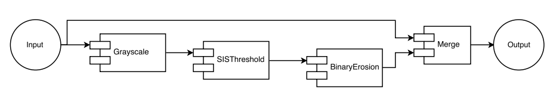
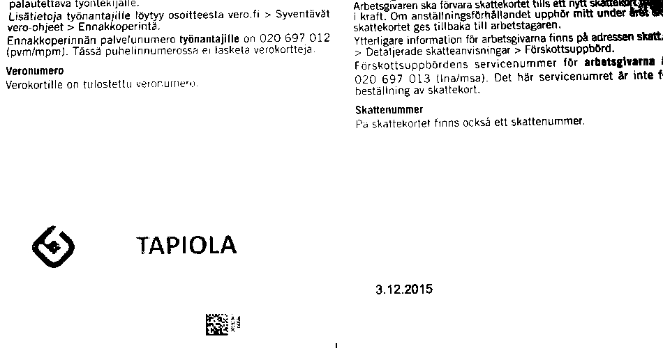
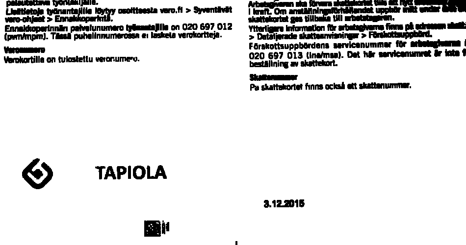

AForge.NET is awesome for complex image processing/analysis
I’m trying to emulate “magic color” feature that I saw in Android app called Camscanner (I can highly recommend this).
I found this wonderful library called AForge.NET for the task - it’s awesome!
Here’s the result compared to the original image:
(Notice how dirty the original picture looks)
Here’s how I did it:
Wiring up the filter graph

And explanation of the filters below:
1. Convert original into greyscale
This essentially gets rid of colors, so it’s easier to work with thresholds, masks and such.
2. Threshold the greyscale one

This produces binary black&white, which we can easily erode and use as a mask.
For this, I picked SISThreshold (proved to be the best) from adaptive binarization filters (note: awesome examples in the docs).
Obviously, there’s still kinks to work out, for example the grey “LÄHI” part from the text disappears, as it is too close to being white.
Falsely detected black parts aren’t much of an issue. It only means that the resulting image won’t be forced to all-white in those parts.
3. Now erode the thresholded image

We do this BinaryErosion3x3 to make the black parts wider. Essentially we get more surface area copied from the original image. This actually made a huge difference.
4. Now use the thresholded+eroded one as a mask for merging with the original input

Now, we get to our output by merging the eroded mask with the original input. Essentially this means copying the original pixels where the mask is black, and all other pixels are forced white.
Input vs. output
Again, let’s recap by comparing the input and output (again - this same image was at the top of this post):
Neat, huh? Of course there is still a bit more work to do, but I’m pretty happy with the result so far.
Summary
All in all, this was a fun project. I did this all from start to finish (including this blog post and learning to use ImageMagick for cropping and animation - blerch..) in less than one day’s work, at the start not knowing anything about image processing. Cool stuff!

Thanks for reading! 😍
If you like my writing, consider following me on Twitter.
Stay updated on my blog posts & projects - sign up for
my newsletter. 🚀
No spam, unsubscribe any time.
RSS also available.